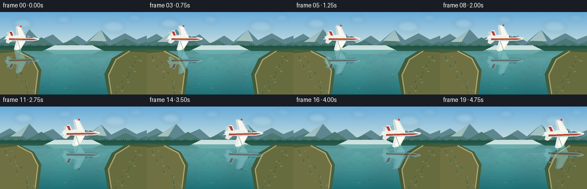
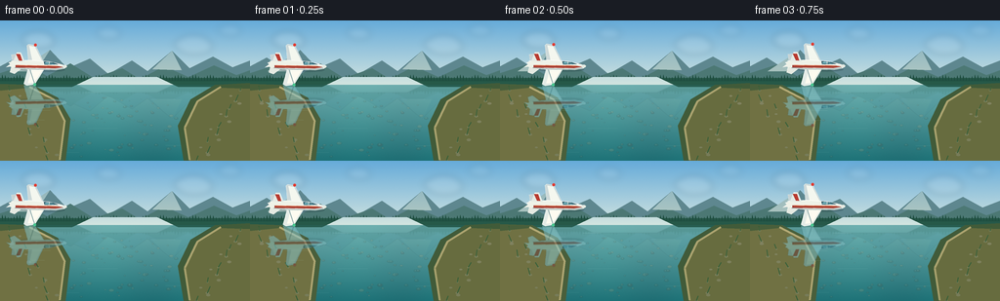
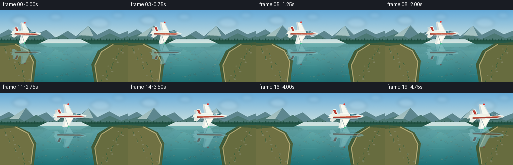
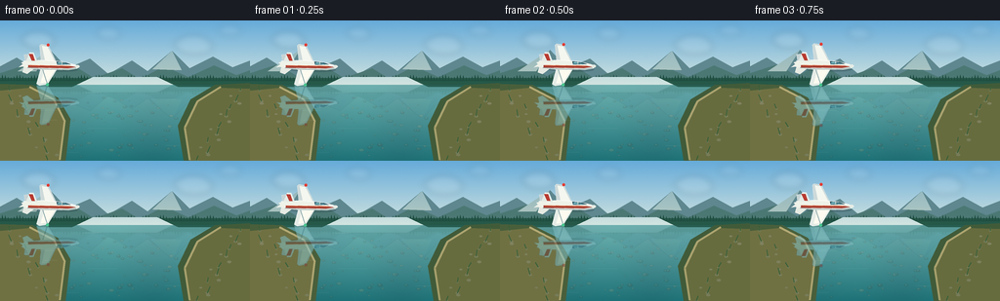

CODING AGENTS AS PIXEL WORLD MODELS
traex/GPT-5.6-Sol · phygen_058
点击播放 · 原生 RGB 像素
逐轮保存的候选
回放视频、检查图与代码变化。
每份候选均可单独播放。实际图片检查记录在下方工具轨迹中。
候选 01播放与检查图
点击播放 · 原生 RGB 像素


展开代码变化
--- 上一保存版本
+++ 本次保存版本
@@ -0,0 +1,229 @@
+from pathlib import Path
+import json, math
+import numpy as np
+from PIL import Image, ImageDraw, ImageFilter
+import artifact_io
+
+ROOT = Path(__file__).resolve().parent
+SPEC = json.loads((ROOT / 'task_spec.json').read_text())
+W, H, N = SPEC['width'], SPEC['height'], SPEC['frames']
+S = 4
+w, h = W*S, H*S
+WL = 66*S
+rng = np.random.default_rng(5801)
+
+
+def rgba_layer():
+ return Image.new('RGBA', (w, h), (0,0,0,0))
+
+def poly(draw, pts, fill, outline=None, width=1):
+ pts = [(int(x*S), int(y*S)) for x,y in pts]
+ draw.polygon(pts, fill=fill)
+ if outline:
+ draw.line(pts+[pts[0]], fill=outline, width=width*S, joint='curve')
+
+def make_base(frame_idx):
+ # Sky and transparent-looking water gradients, with very fine film texture.
+ yy = np.arange(h)[:,None]
+ xx = np.arange(w)[None,:]
+ arr = np.zeros((h,w,3), dtype=np.float32)
+ sy = np.minimum(yy, WL) / WL
+ sky_top = np.array([102,171,217.], np.float32)
+ sky_hor = np.array([211,229,224.], np.float32)
+ sky = sky_top[None,None,:]*(1-sy[:,:,None]) + sky_hor[None,None,:]*sy[:,:,None]
+ arr[:] = sky
+ wy = np.maximum(yy-WL,0) / (h-WL)
+ wat_hor = np.array([111,174,174.], np.float32)
+ wat_near = np.array([30,113,118.], np.float32)
+ water = wat_hor[None,None,:]*(1-wy[:,:,None]) + wat_near[None,None,:]*wy[:,:,None]
+ arr[WL:] = water[WL:]
+ # Subtle stable color variations: depth/current bands, not waves.
+ river_variation = 2.2*np.sin(xx/57.0) + 1.3*np.sin((xx+yy)/103.0)
+ arr[WL:,:,1] += river_variation[WL:]
+ arr[WL:,:,2] += river_variation[WL:]*0.8
+ noise = rng.normal(0, 0.45, (h,w,1))
+ arr += noise
+ return Image.fromarray(np.uint8(np.clip(arr,0,255)), 'RGB').convert('RGBA')
+
+# Static stones positions generated once; values are final-resolution coordinates.
+stones=[]
+for _ in range(82):
+ y = rng.uniform(79,143)
+ # Broad clear central channel, denser toward near foreground.
+ half = 22 + (y-66)*1.15
+ x = rng.uniform(128-half,128+half)
+ r = rng.uniform(.6,2.2)*(0.45+(y-66)/77)
+ col = rng.choice([(118,103,76),(157,137,99),(77,97,83),(184,162,118),(90,72,58)])
+ stones.append((x,y,r,col))
+
+
+def landscape_and_river(im, frame_idx):
+ # Clouds on a separate softly blurred layer.
+ clouds=rgba_layer(); cd=ImageDraw.Draw(clouds)
+ drift = frame_idx*0.18*S
+ for cx,cy,rx,alpha in [(39,20,24,34),(111,13,18,24),(198,25,28,30),(235,10,17,20)]:
+ cx = cx*S + drift
+ cy*=S; rx*=S
+ for ox,oy,rr in [(-.32,-.03,.42),(0,-.15,.54),(.34,0,.38),(.05,.12,.62)]:
+ cd.ellipse((cx+(ox*rx)-rr*rx,cy+(oy*rx)-rr*rx*.38,cx+(ox*rx)+rr*rx,cy+(oy*rx)+rr*rx*.38), fill=(255,255,249,alpha))
+ clouds=clouds.filter(ImageFilter.GaussianBlur(3.2*S))
+ im.alpha_composite(clouds)
+
+ land=rgba_layer(); d=ImageDraw.Draw(land)
+ # Distant mountains, atmospheric layers.
+ poly(d, [(0,62),(0,47),(17,38),(31,47),(51,30),(69,49),(92,39),(111,55),(135,41),(151,52),(176,31),(194,49),(218,37),(238,48),(256,41),(256,67),(0,67)], (94,135,143,255))
+ poly(d, [(0,63),(0,54),(28,45),(48,57),(72,44),(96,59),(125,49),(143,60),(168,47),(193,58),(219,46),(242,56),(256,51),(256,68),(0,68)], (76,120,116,255))
+ # Warm sunlit ridges.
+ poly(d, [(18,52),(51,30),(37,52)], (145,168,155,120))
+ poly(d, [(156,50),(176,31),(186,51)], (143,166,151,100))
+ # Far treeline silhouettes.
+ d.rectangle((0,59*S,w,68*S), fill=(38,88,72,255))
+ for x in range(-2,259,3):
+ ht = 3.5 + 3*(0.5+0.5*math.sin(x*1.71))
+ d.polygon([(x*S,62*S),((x+1.4)*S,(62-ht)*S),((x+2.8)*S,62*S)], fill=(31,78,64,255))
+ # Opening for distant river channel.
+ d.polygon([(95*S,58*S),(161*S,58*S),(184*S,69*S),(72*S,69*S)], fill=(0,0,0,0))
+ im.alpha_composite(land)
+
+ # Soft, geometrically mirrored mountain/treeline reflection.
+ upper=np.asarray(land)[:WL].copy()
+ refl=np.flipud(upper)
+ depth=min(refl.shape[0],h-WL)
+ refl=refl[:depth].astype(np.float32)
+ refl[:,:,:3] = refl[:,:,:3]*np.array([.58,.78,.79])[None,None,:] + np.array([18,38,43])[None,None,:]
+ fade=np.linspace(.30,.07,depth)[:,None]
+ refl[:,:,3] *= fade
+ refl_im=Image.fromarray(np.uint8(np.clip(refl,0,255)),'RGBA').filter(ImageFilter.GaussianBlur((0.35*S)))
+ im.alpha_composite(refl_im,(0,WL))
+
+ # Clear riverbed: stones remain visible beneath the blue-green surface.
+ bed=rgba_layer(); bd=ImageDraw.Draw(bed)
+ for x,y,r,c in stones:
+ # small directional shadow, stone and top glint
+ bd.ellipse(((x-r*1.15)*S,(y-r*.48)*S,(x+r*1.15)*S,(y+r*.65)*S), fill=(24,55,53,24))
+ bd.ellipse(((x-r)*S,(y-r*.62)*S,(x+r)*S,(y+r*.58)*S), fill=(*c,48))
+ bd.ellipse(((x-r*.45)*S,(y-r*.42)*S,(x+r*.15)*S,(y-r*.05)*S), fill=(224,225,186,26))
+ bed=bed.filter(ImageFilter.GaussianBlur(.22*S))
+ im.alpha_composite(bed)
+
+ # Very sparse, level highlights preserve the impression of perfectly calm water.
+ gl=rgba_layer(); gd=ImageDraw.Draw(gl)
+ for x,y,L,a in [(94,74,18,31),(167,81,24,27),(42,92,15,19),(105,111,31,16),(183,128,27,16),(220,101,13,18),(71,135,20,14)]:
+ phase=math.sin(frame_idx*.25+x)*.3
+ gd.line(((x-L/2)*S,(y+phase)*S,(x+L/2)*S,(y+phase)*S),fill=(210,244,231,a),width=max(1,S//2))
+ im.alpha_composite(gl)
+
+ # Near banks frame the river without hiding the reflected aircraft.
+ bank=rgba_layer(); b=ImageDraw.Draw(bank)
+ poly(b, [(0,65),(33,66),(59,79),(72,101),(67,144),(0,144)], (73,95,59,255))
+ poly(b, [(256,64),(220,66),(195,81),(182,108),(188,144),(256,144)], (65,91,57,255))
+ poly(b, [(0,72),(30,69),(55,82),(66,104),(60,144),(0,144)], (112,113,67,255))
+ poly(b, [(256,70),(224,69),(202,84),(188,111),(194,144),(256,144)], (103,108,63,255))
+ # Earth/stone shoreline rims.
+ b.line([(30*S,68*S),(55*S,81*S),(66*S,103*S),(61*S,143*S)],fill=(194,172,112,220),width=2*S)
+ b.line([(226*S,68*S),(202*S,83*S),(189*S,110*S),(194*S,143*S)],fill=(185,165,105,220),width=2*S)
+ # Rocks and grasses on banks.
+ for side in [-1,1]:
+ for j in range(17):
+ yy=72+j*4.4 + (j%3)*1.1
+ if side<0: xx=10 + j*2.7 + 8*math.sin(j*1.8)
+ else: xx=246 - j*2.6 - 7*math.sin(j*1.6)
+ rr=1.1+(j%4)*.35
+ b.ellipse(((xx-rr)*S,(yy-rr*.55)*S,(xx+rr)*S,(yy+rr*.55)*S),fill=(137,125,82,210))
+ if j%2==0:
+ b.line((xx*S,yy*S,(xx+side*(1+j%3))*S,(yy-5-j%4)*S),fill=(58,92,49,230),width=S)
+ im.alpha_composite(bank)
+
+
+def make_plane_asset(scale=1.0):
+ # Aircraft asset is drawn at high resolution; all coordinates are in final pixels.
+ A=Image.new('RGBA',(112*S,82*S),(0,0,0,0)); d=ImageDraw.Draw(A)
+ cx,cy=56,41
+ def P(points): return [((cx+x)*S,(cy+y)*S) for x,y in points]
+ # understated ambient shadow underneath the body
+ d.ellipse(((cx-31)*S,(cy+1)*S,(cx+34)*S,(cy+8)*S),fill=(14,38,46,50))
+ # far wing and far tailplane
+ d.polygon(P([(-8,-2),(7,-4),(-4,-25),(-13,-26),(-15,-24),(-12,-2)]),fill=(205,217,217,255))
+ d.polygon(P([(-27,-2),(-17,-3),(-28,-13),(-34,-12),(-32,-2)]),fill=(199,211,212,255))
+ # bright top facets
+ d.polygon(P([(-7,-4),(5,-5),(-5,-23),(-12,-24)]),fill=(244,247,239,255))
+ # Near main wing (large and unmistakable)
+ d.polygon(P([(-10,1),(10,1),(-3,24),(-13,26),(-17,24),(-12,3)]),fill=(229,236,231,255))
+ d.polygon(P([(-7,3),(8,2),(-4,22),(-12,23)]),fill=(253,251,240,255))
+ d.line(P([(-11,3),(-4,22)]),fill=(143,170,171,255),width=S)
+ # near tailplane
+ d.polygon(P([(-29,1),(-17,2),(-29,12),(-35,10),(-33,2)]),fill=(229,234,226,255))
+ # streamlined fuselage
+ fus=[(-37,-2),(-29,-5),(-10,-6),(13,-5),(26,-3),(36,0),(33,3),(23,5),(-10,6),(-27,5),(-35,3),(-40,4),(-35,0)]
+ d.polygon(P(fus),fill=(239,242,232,255))
+ d.line(P([(-34,-4),(-10,-6),(14,-5),(29,-2),(36,0)]),fill=(255,255,248,255),width=S)
+ d.line(P([(-29,4),(-6,5),(22,4),(32,2)]),fill=(144,169,170,255),width=S)
+ # red livery stripe reinforces body direction
+ d.polygon(P([(-28,1),(24,0),(32,1),(22,3),(-28,4)]),fill=(174,61,48,235))
+ d.line(P([(-26,1),(24,0)]),fill=(236,117,75,240),width=S)
+ # cockpit canopy and two panes
+ d.polygon(P([(7,-5),(19,-4),(25,-2),(8,-1)]),fill=(35,78,93,255))
+ d.polygon(P([(9,-4),(14,-4),(14,-2),(8,-2)]),fill=(116,179,188,255))
+ d.polygon(P([(15,-4),(19,-3),(22,-2),(15,-2)]),fill=(77,137,150,255))
+ d.line(P([(14,-4),(14,-2)]),fill=(218,232,222,255),width=S)
+ # Vertical tail fin visible above fuselage.
+ d.polygon(P([(-31,-4),(-27,-15),(-22,-15),(-17,-4)]),fill=(230,236,230,255))
+ d.polygon(P([(-28,-13),(-23,-13),(-20,-5),(-24,-5)]),fill=(184,59,49,255))
+ # nose highlight and tiny landing-free glider belly
+ d.ellipse(((cx+31)*S,(cy-1.5)*S,(cx+36)*S,(cy+2)*S),fill=(231,236,227,255))
+ # navigation lights
+ d.ellipse(((cx-6)*S,(cy-26.8)*S,(cx-2.5)*S,(cy-23.3)*S),fill=(224,58,49,255))
+ d.ellipse(((cx-5)*S,(cy+22.5)*S,(cx-1.5)*S,(cy+26)*S),fill=(74,196,142,255))
+ if abs(scale-1)>1e-4:
+ A=A.resize((round(A.width*scale),round(A.height*scale)),Image.Resampling.LANCZOS)
+ return A
+
+
+def paste_center(base, asset, x, y):
+ base.alpha_composite(asset,(round(x*S-asset.width/2),round(y*S-asset.height/2)))
+
+
+def render(i):
+ im=make_base(i)
+ landscape_and_river(im,i)
+ u=i/(N-1)
+ # Smooth constant glide with a tiny natural lift arc; remains entirely in frame.
+ x=39 + 177*u
+ y=46.0 + 1.4*u - 1.1*math.sin(math.pi*u)
+ scale=.82 + .15*u
+ angle=-2.2 + 3.3*u
+ asset=make_plane_asset(scale)
+ asset=asset.rotate(angle,resample=Image.Resampling.BICUBIC,expand=True)
+
+ # Exact optical mirror around the flat water plane. It is dimmed/tinted, but crisp.
+ ra=asset.transpose(Image.Transpose.FLIP_TOP_BOTTOM)
+ rarr=np.asarray(ra).copy().astype(np.float32)
+ rarr[:,:,:3]=rarr[:,:,:3]*np.array([.49,.67,.70])[None,None,:]+np.array([13,27,29])[None,None,:]
+ rarr[:,:,3]*=.58
+ ra=Image.fromarray(np.uint8(np.clip(rarr,0,255)),'RGBA').filter(ImageFilter.GaussianBlur(.30*S))
+ reflection=rgba_layer()
+ paste_center(reflection,ra,x,2*(WL/S)-y)
+ # Reflection is strictly clipped to the river surface.
+ mask=np.zeros((h,w,1),dtype=np.uint8); mask[WL:]=255
+ rr=np.asarray(reflection).copy(); rr[:,:,3]=(rr[:,:,3].astype(np.uint16)*mask[:,:,0]//255).astype(np.uint8)
+ im.alpha_composite(Image.fromarray(rr,'RGBA'))
+
+ # A few translucent water glints cross the reflection, anchoring it to the surface.
+ surf=rgba_layer(); sd=ImageDraw.Draw(surf)
+ ry=2*(WL/S)-y
+ for off,L in [(-8,19),(6,25),(16,13)]:
+ yy=(ry+off)*S
+ sd.line(((x-L/2)*S,yy,(x+L/2)*S,yy),fill=(193,232,219,24),width=max(1,S//2))
+ im.alpha_composite(surf)
+
+ # Plane itself, followed by a faint warm sun rim.
+ paste_center(im,asset,x,y)
+ return np.asarray(im.convert('RGB').resize((W,H),Image.Resampling.LANCZOS),dtype=np.uint8)
+
+
+def main():
+ frames=np.stack([render(i) for i in range(N)]).astype(np.uint8)
+ artifact_io.save(frames,ROOT)
+
+if __name__=='__main__':
+ main()
候选 02播放与检查图
点击播放 · 原生 RGB 像素


展开代码变化
--- 上一保存版本
+++ 本次保存版本
@@ -188,7 +188,7 @@
landscape_and_river(im,i)
u=i/(N-1)
# Smooth constant glide with a tiny natural lift arc; remains entirely in frame.
- x=39 + 177*u
+ x=52 + 151*u
y=46.0 + 1.4*u - 1.1*math.sin(math.pi*u)
scale=.82 + .15*u
angle=-2.2 + 3.3*u
可观测工具轨迹
实际执行的命令与返回图片。
命令 1exit 0
/bin/bash -lc "cat prompt.txt && printf '\\n--- GENERATION_RULES ---\\n' && cat GENERATION_RULES.md"
命令 2exit 0
/bin/bash -lc "printf '%s\\n' '--- task_spec.json ---'; cat task_spec.json; printf '%s\\n' '--- files ---'; find . -maxdepth 2 -type f -printf '%p\\n' | sort"
命令 3exit 0
/bin/bash -lc 'cat artifact_io.py'
命令 4exit 0
/bin/bash -lc "cat > generate.py <<'PY'
from pathlib import Path
import json, math
import numpy as np
from PIL import Image, ImageDraw, ImageFilter
import artifact_io
ROOT = Path(__file__).resolve().parent
SPEC = json.loads((ROOT / 'task_spec.json').read_text())
W, H, N = SPEC['width'], SPEC['height'], SPEC['frames']
S = 4
w, h = W*S, H*S
WL = 66*S
rng = np.random.default_rng(5801)
def rgba_layer():
return Image.new('RGBA', (w, h), (0,0,0,0))
def poly(draw, pts, fill, outline=None, width=1):
pts = [(int(x*S), int(y*S)) for x,y in pts]
draw.polygon(pts, fill=fill)
if outline:
draw.line(pts+[pts[0]], fill=outline, width=width*S, joint='curve')
def make_base(frame_idx):
# Sky and transparent-looking water gradients, with very fine film texture.
yy = np.arange(h)[:,None]
xx = np.arange(w)[None,:]
arr = np.zeros((h,w,3), dtype=np.float32)
sy = np.minimum(yy, WL) / WL
sky_top = np.array([102,171,217.], np.float32)
sky_hor = np.array([211,229,224.], np.float32)
sky = sky_top[None,None,:]*(1-sy[:,:,None]) + sky_hor[None,None,:]*sy[:,:,None]
arr[:] = sky
wy = np.maximum(yy-WL,0) / (h-WL)
wat_hor = np.array([111,174,174.], np.float32)
wat_near = np.array([30,113,118.], np.float32)
water = wat_hor[None,None,:]*(1-wy[:,:,None]) + wat_near[None,None,:]*wy[:,:,None]
arr[WL:] = water[WL:]
# Subtle stable color variations: depth/current bands, not waves.
river_variation = 2.2*np.sin(xx/57.0) + 1.3*np.sin((xx+yy)/103.0)
arr[WL:,:,1] += river_variation[WL:]
arr[WL:,:,2] += river_variation[WL:]*0.8
noise = rng.normal(0, 0.45, (h,w,1))
arr += noise
return Image.fromarray(np.uint8(np.clip(arr,0,255)), 'RGB').convert('RGBA')
# Static stones positions generated once; values are final-resolution coordinates.
stones=[]
for _ in range(82):
y = rng.uniform(79,143)
# Broad clear central channel, denser toward near foreground.
half = 22 + (y-66)*1.15
x = rng.uniform(128-half,128+half)
r = rng.uniform(.6,2.2)*(0.45+(y-66)/77)
col = rng.choice([(118,103,76),(157,137,99),(77,97,83),(184,162,118),(90,72,58)])
stones.append((x,y,r,col))
def landscape_and_river(im, frame_idx):
# Clouds on a separate softly blurred layer.
clouds=rgba_layer(); cd=ImageDraw.Draw(clouds)
drift = frame_idx*0.18*S
for cx,cy,rx,alpha in [(39,20,24,34),(111,13,18,24),(198,25,28,30),(235,10,17,20)]:
cx = cx*S + drift
cy*=S; rx*=S
for ox,oy,rr in [(-.32,-.03,.42),(0,-.15,.54),(.34,0,.38),(.05,.12,.62)]:
cd.ellipse((cx+(ox*rx)-rr*rx,cy+(oy*rx)-rr*rx*.38,cx+(ox*rx)+rr*rx,cy+(oy*rx)+rr*rx*.38), fill=(255,255,249,alpha))
clouds=clouds.filter(ImageFilter.GaussianBlur(3.2*S))
im.alpha_composite(clouds)
land=rgba_layer(); d=ImageDraw.Draw(land)
# Distant mountains, atmospheric layers.
poly(d, [(0,62),(0,47),(17,38),(31,47),(51,30),(69,49),(92,39),(111,55),(135,41),(151,52),(176,31),(194,49),(218,37),(238,48),(256,41),(256,67),(0,67)], (94,135,143,255))
poly(d, [(0,63),(0,54),(28,45),(48,57),(72,44),(96,59),(125,49),(143,60),(168,47),(193,58),(219,46),(242,56),(256,51),(256,68),(0,68)], (76,120,116,255))
# Warm sunlit ridges.
poly(d, [(18,52),(51,30),(37,52)], (145,168,155,120))
poly(d, [(156,50),(176,31),(186,51)], (143,166,151,100))
# Far treeline silhouettes.
d.rectangle((0,59*S,w,68*S), fill=(38,88,72,255))
for x in range(-2,259,3):
ht = 3.5 + 3*(0.5+0.5*math.sin(x*1.71))
d.polygon([(x*S,62*S),((x+1.4)*S,(62-ht)*S),((x+2.8)*S,62*S)], fill=(31,78,64,255))
# Opening for distant river channel.
d.polygon([(95*S,58*S),(161*S,58*S),(184*S,69*S),(72*S,69*S)], fill=(0,0,0,0))
im.alpha_composite(land)
# Soft, geometrically mirrored mountain/treeline reflection.
upper=np.asarray(land)[:WL].copy()
refl=np.flipud(upper)
depth=min(refl.shape[0],h-WL)
refl=refl[:depth].astype(np.float32)
refl[:,:,:3] = refl[:,:,:3]*np.array([.58,.78,.79])[None,None,:] + np.array([18,38,43])[None,None,:]
fade=np.linspace(.30,.07,depth)[:,None]
refl[:,:,3] *= fade
refl_im=Image.fromarray(np.uint8(np.clip(refl,0,255)),'RGBA').filter(ImageFilter.GaussianBlur((0.35*S)))
im.alpha_composite(refl_im,(0,WL))
# Clear riverbed: stones remain visible beneath the blue-green surface.
bed=rgba_layer(); bd=ImageDraw.Draw(bed)
for x,y,r,c in stones:
# small directional shadow, stone and top glint
bd.ellipse(((x-r*1.15)*S,(y-r*.48)*S,(x+r*1.15)*S,(y+r*.65)*S), fill=(24,55,53,24))
bd.ellipse(((x-r)*S,(y-r*.62)*S,(x+r)*S,(y+r*.58)*S), fill=(*c,48))
bd.ellipse(((x-r*.45)*S,(y-r*.42)*S,(x+r*.15)*S,(y-r*.05)*S), fill=(224,225,186,26))
bed=bed.filter(ImageFilter.GaussianBlur(.22*S))
im.alpha_composite(bed)
# Very sparse, level highlights preserve the impression of perfectly calm water.
gl=rgba_layer(); gd=ImageDraw.Draw(gl)
for x,y,L,a in [(94,74,18,31),(167,81,24,27),(42,92,15,19),(105,111,31,16),(183,128,27,16),(220,101,13,18),(71,135,20,14)]:
phase=math.sin(frame_idx*.25+x)*.3
gd.line(((x-L/2)*S,(y+phase)*S,(x+L/2)*S,(y+phase)*S),fill=(210,244,231,a),width=max(1,S//2))
im.alpha_composite(gl)
# Near banks frame the river without hiding the reflected aircraft.
bank=rgba_layer(); b=ImageDraw.Draw(bank)
poly(b, [(0,65),(33,66),(59,79),(72,101),(67,144),(0,144)], (73,95,59,255))
poly(b, [(256,64),(220,66),(195,81),(182,108),(188,144),(256,144)], (65,91,57,255))
poly(b, [(0,72),(30,69),(55,82),(66,104),(60,144),(0,144)], (112,113,67,255))
poly(b, [(256,70),(224,69),(202,84),(188,111),(194,144),(256,144)], (103,108,63,255))
# Earth/stone shoreline rims.
b.line([(30*S,68*S),(55*S,81*S),(66*S,103*S),(61*S,143*S)],fill=(194,172,112,220),width=2*S)
b.line([(226*S,68*S),(202*S,83*S),(189*S,110*S),(194*S,143*S)],fill=(185,165,105,220),width=2*S)
# Rocks and grasses on banks.
for side in [-1,1]:
for j in range(17):
yy=72+j*4.4 + (j%3)*1.1
if side<0: xx=10 + j*2.7 + 8*math.sin(j*1.8)
else: xx=246 - j*2.6 - 7*math.sin(j*1.6)
rr=1.1+(j%4)*.35
b.ellipse(((xx-rr)*S,(yy-rr*.55)*S,(xx+rr)*S,(yy+rr*.55)*S),fill=(137,125,82,210))
if j%2==0:
b.line((xx*S,yy*S,(xx+side*(1+j%3))*S,(yy-5-j%4)*S),fill=(58,92,49,230),width=S)
im.alpha_composite(bank)
def make_plane_asset(scale=1.0):
# Aircraft asset is drawn at high resolution; all coordinates are in final pixels.
A=Image.new('RGBA',(112*S,82*S),(0,0,0,0)); d=ImageDraw.Draw(A)
cx,cy=56,41
def P(points): return [((cx+x)*S,(cy+y)*S) for x,y in points]
# understated ambient shadow underneath the body
d.ellipse(((cx-31)*S,(cy+1)*S,(cx+34)*S,(cy+8)*S),fill=(14,38,46,50))
# far wing and far tailplane
d.polygon(P([(-8,-2),(7,-4),(-4,-25),(-13,-26),(-15,-24),(-12,-2)]),fill=(205,217,217,255))
d.polygon(P([(-27,-2),(-17,-3),(-28,-13),(-34,-12),(-32,-2)]),fill=(199,211,212,255))
# bright top facets
d.polygon(P([(-7,-4),(5,-5),(-5,-23),(-12,-24)]),fill=(244,247,239,255))
# Near main wing (large and unmistakable)
d.polygon(P([(-10,1),(10,1),(-3,24),(-13,26),(-17,24),(-12,3)]),fill=(229,236,231,255))
d.polygon(P([(-7,3),(8,2),(-4,22),(-12,23)]),fill=(253,251,240,255))
d.line(P([(-11,3),(-4,22)]),fill=(143,170,171,255),width=S)
# near tailplane
d.polygon(P([(-29,1),(-17,2),(-29,12),(-35,10),(-33,2)]),fill=(229,234,226,255))
# streamlined fuselage
fus=[(-37,-2),(-29,-5),(-10,-6),(13,-5),(26,-3),(36,0),(33,3),(23,5),(-10,6),(-27,5),(-35,3),(-40,4),(-35,0)]
d.polygon(P(fus),fill=(239,242,232,255))
d.line(P([(-34,-4),(-10,-6),(14,-5),(29,-2),(36,0)]),fill=(255,255,248,255),width=S)
d.line(P([(-29,4),(-6,5),(22,4),(32,2)]),fill=(144,169,170,255),width=S)
# red livery stripe reinforces body direction
d.polygon(P([(-28,1),(24,0),(32,1),(22,3),(-28,4)]),fill=(174,61,48,235))
d.line(P([(-26,1),(24,0)]),fill=(236,117,75,240),width=S)
# cockpit canopy and two panes
d.polygon(P([(7,-5),(19,-4),(25,-2),(8,-1)]),fill=(35,78,93,255))
d.polygon(P([(9,-4),(14,-4),(14,-2),(8,-2)]),fill=(116,179,188,255))
d.polygon(P([(15,-4),(19,-3),(22,-2),(15,-2)]),fill=(77,137,150,255))
d.line(P([(14,-4),(14,-2)]),fill=(218,232,222,255),width=S)
# Vertical tail fin visible above fuselage.
d.polygon(P([(-31,-4),(-27,-15),(-22,-15),(-17,-4)]),fill=(230,236,230,255))
d.polygon(P([(-28,-13),(-23,-13),(-20,-5),(-24,-5)]),fill=(184,59,49,255))
# nose highlight and tiny landing-free glider belly
d.ellipse(((cx+31)*S,(cy-1.5)*S,(cx+36)*S,(cy+2)*S),fill=(231,236,227,255))
# navigation lights
d.ellipse(((cx-6)*S,(cy-26.8)*S,(cx-2.5)*S,(cy-23.3)*S),fill=(224,58,49,255))
d.ellipse(((cx-5)*S,(cy+22.5)*S,(cx-1.5)*S,(cy+26)*S),fill=(74,196,142,255))
if abs(scale-1)>1e-4:
A=A.resize((round(A.width*scale),round(A.height*scale)),Image.Resampling.LANCZOS)
return A
def paste_center(base, asset, x, y):
base.alpha_composite(asset,(round(x*S-asset.width/2),round(y*S-asset.height/2)))
def render(i):
im=make_base(i)
landscape_and_river(im,i)
u=i/(N-1)
# Smooth constant glide with a tiny natural lift arc; remains entirely in frame.
x=39 + 177*u
y=46.0 + 1.4*u - 1.1*math.sin(math.pi*u)
scale=.82 + .15*u
angle=-2.2 + 3.3*u
asset=make_plane_asset(scale)
asset=asset.rotate(angle,resample=Image.Resampling.BICUBIC,expand=True)
# Exact optical mirror around the flat water plane. It is dimmed/tinted, but crisp.
ra=asset.transpose(Image.Transpose.FLIP_TOP_BOTTOM)
rarr=np.asarray(ra).copy().astype(np.float32)
rarr[:,:,:3]=rarr[:,:,:3]*np.array([.49,.67,.70])[None,None,:]+np.array([13,27,29])[None,None,:]
rarr[:,:,3]*=.58
ra=Image.fromarray(np.uint8(np.clip(rarr,0,255)),'RGBA').filter(ImageFilter.GaussianBlur(.30*S))
reflection=rgba_layer()
paste_center(reflection,ra,x,2*(WL/S)-y)
# Reflection is strictly clipped to the river surface.
mask=np.zeros((h,w,1),dtype=np.uint8); mask[WL:]=255
rr=np.asarray(reflection).copy(); rr[:,:,3]=(rr[:,:,3].astype(np.uint16)*mask[:,:,0]//255).astype(np.uint8)
im.alpha_composite(Image.fromarray(rr,'RGBA'))
# A few translucent water glints cross the reflection, anchoring it to the surface.
surf=rgba_layer(); sd=ImageDraw.Draw(surf)
ry=2*(WL/S)-y
for off,L in [(-8,19),(6,25),(16,13)]:
yy=(ry+off)*S
sd.line(((x-L/2)*S,yy,(x+L/2)*S,yy),fill=(193,232,219,24),width=max(1,S//2))
im.alpha_composite(surf)
# Plane itself, followed by a faint warm sun rim.
paste_center(im,asset,x,y)
return np.asarray(im.convert('RGB').resize((W,H),Image.Resampling.LANCZOS),dtype=np.uint8)
def main():
frames=np.stack([render(i) for i in range(N)]).astype(np.uint8)
artifact_io.save(frames,ROOT)
if __name__=='__main__':
main()
PY
python generate.py
python - <<'PY'
import numpy as np
from PIL import Image
z=np.load('pixels.npz')['pixels']
print('pixels',z.shape,z.dtype,'range',z.min(),z.max())
print('frames',len(list(__import__('pathlib').Path('frames').glob('*.png'))))
PY"命令 5exit 0
/bin/bash -lc "python - <<'PY'
p='generate.py'
s=open(p).read().replace('x=39 + 177*u','x=52 + 151*u')
open(p,'w').write(s)
PY
python generate.py
python - <<'PY'
from pathlib import Path
import json, numpy as np
from PIL import Image
spec=json.load(open('task_spec.json'))
files=sorted(Path('frames').glob('*.png'))
assert len(files)==spec['frames']==20
for p in files:
im=Image.open(p)
assert im.mode=='RGB' and im.size==(spec['width'],spec['height'])
z=np.load('pixels.npz')['pixels']
assert z.shape==(144,256,20) and z.dtype==np.uint32
# Frame deltas ensure real temporal animation rather than duplicated stills.
a=np.stack([np.asarray(Image.open(p)) for p in files])
d=np.mean(np.abs(a[1:].astype(float)-a[:-1].astype(float)),axis=(1,2,3))
print('validated:',len(files),'RGB frames',files[0],files[-1])
print('mean adjacent-frame deltas:',np.round(d,3).tolist())
print('outputs:',[(p.name,p.stat().st_size) for p in [Path('pixels.npz'),Path('index.html'),Path('inspection.png')]])
PY"视觉工具实际返回图片 1

视觉工具实际返回图片 2

保存候选 2 份；完成命令 5 次；可验证图片返回 2 张。原始 API 响应与完整日志保留在本地。